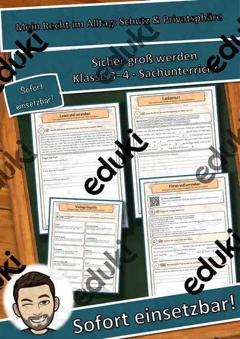

Gewalt an Frauen und Mädchen - Homeschooling
Überall auf der Welt werden viele Frauen und Mädchen Opfer von Gewalt. Leider kann man dieses Problem nicht so einfach lösen. Dieses Arbeitsblatt auch geeignet zur Heimarbeit, Homeschooling bei Schulschließung aufgrund des Coronavirus) zeigt verschiedene Formen der Gewalt an Frauen und Mädchen, sowie Hilfsangebote auf.
FachEthik & Werte und Normen
KlasseKl. 7–8
SchulformSek I Mittlere Schulform
MaterialartUnterrichtsreihen, Arbeitsblätter, Stationenlernen, Fördermaterial/Inklusion
Ähnliche Materialien

Mädchen Lückentext mit Wortspeicher Hörverstehen und Suchsel

Gewalt Lückentext mit Wortspeicher Hörverstehen und Suchsel

02-11 Internationaler Tag der Frauen und Mädchen in der Wissenschaft

Streit und Gewalt zuhause - Homeschooling

04-24 Internationaler Tag der Mädchen im IKT-Sektor

Mein Recht im Alltag Sicher groß werden: Schutz vor Gewalt und meine Privatsphäre – Alltag den Kinderrechten zuordnen un

Malala Yousafzai Lückentext mit Wortspeicher Hörverstehen und Suchsel